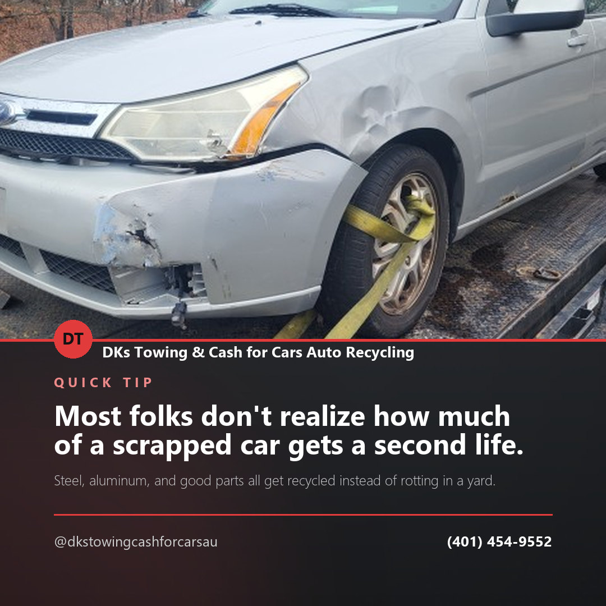
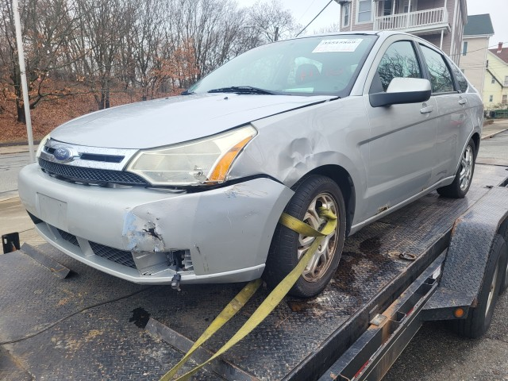
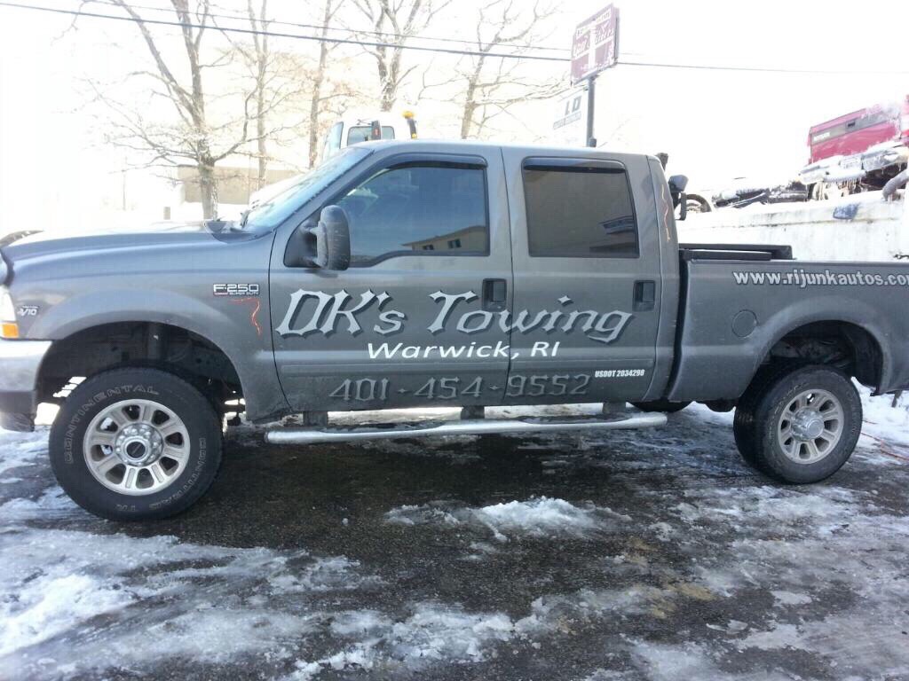
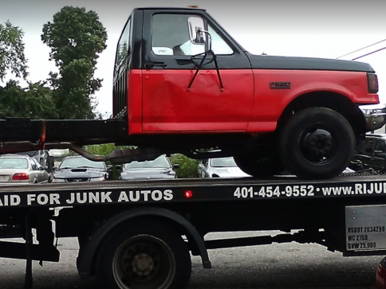

Post idea · Instagram
Most folks don't realize how much of a scrapped car gets a second life. Steel, aluminum, and good parts all get recycled instead of rotting in a yard.
DKs Towing & Cash for Cars Auto Recycling buys junk cars and trucks across Rhode Island — with convenient junk car removal and an eco-friendly way to clear out a vehicle you no longer need.
Call Now — (401) 454-9552Whether your vehicle is junk or just unwanted, our team pays cash and hauls it away, so you get a hassle-free experience from the first call.
“When you need CASH for your JUNK OR UNWANTED vehicles, our team of specialists at the best junkyard in Rhode Island will pay you cash on the spot.” — DKs Towing & Cash for Cars, in their own words
Beyond single vehicles, DKs handles heavy equipment removal and full clear-outs — junkyard, bodyshop, estate properties, impound lots, commercial properties, and complete lots of equipment or vehicles, all paid in cash.



Call is the fastest way to reach us — we'll give you a straight answer over the phone.
(401) 454-9552Content